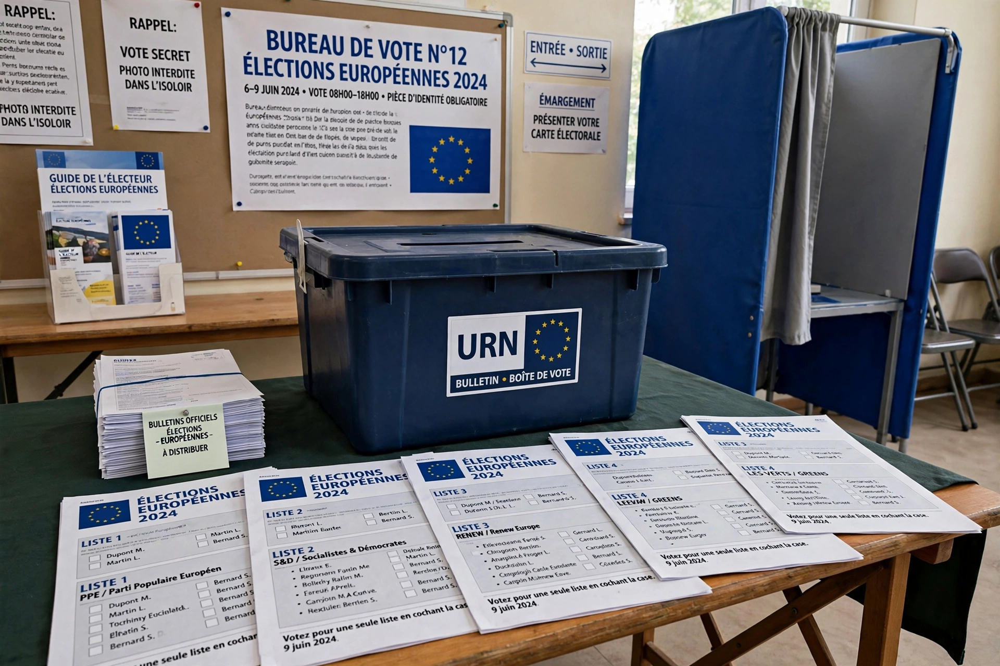

European Parliamentary Elections Act 1999

The European Parliamentary Elections Act 1999 (c. 1) is an Act of the Parliament of the United Kingdom that changed the electoral system for elections to the European Parliament in Great Britain from first-past-the-post in single-member constituencies to proportional representation using regional party lists and the d'Hondt method. Northern Ireland continued to use the single transferable vote, as it had since 1979.
| Citation | 1999 c. 1 |
|---|---|
| Royal assent | 14 January 1999 |
| First election under Act | 1999 European Parliament election |
| Repealed | 31 January 2020 (following Brexit) |
Provisions
The Act divided England into nine electoral regions (based on the standard regions), with Scotland and Wales each forming a single region, returning between 3 and 10 MEPs each. Voters cast a single vote for a party list (or an independent candidate); seats were allocated within each region by the d'Hondt highest-averages method. The Labour manifesto of 1997 had promised a proportional system, and a review chaired by Lord Jenkins recommended a form of PR across Westminster as well, though only the European change was implemented.
Closed list controversy
The government adopted a closed list, under which the order of candidates was fixed by the parties and voters could not choose among them. The House of Lords repeatedly amended the bill to require an open list, defeating the government five times in one of the most protracted Commons–Lords stand-offs of the era; the government eventually prevailed by threatening the Parliament Acts and by the sheer number of defeats, and the closed list was used in the 1999 elections, drawing criticism for giving party machines control over which candidates were elected.
Effects and repeal
The regional-list system was used at the European elections of 1999, 2004, 2009, 2014 and 2019. Proportional outcomes boosted smaller parties: the UK Independence Party won its first European seats in 1999 and topped the poll in 2014, and the Brexit Party won the 2019 election. Following the withdrawal of the United Kingdom from the European Union on 31 January 2020, the Act was repealed as part of the Brexit consequential legislation, and the United Kingdom's MEPs left office.